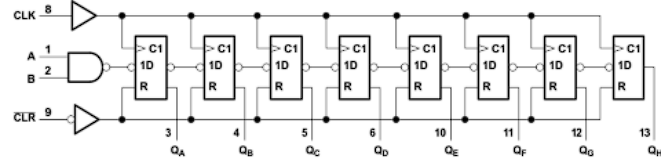
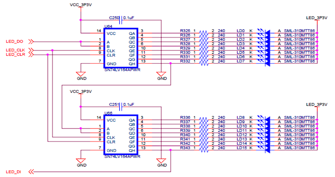
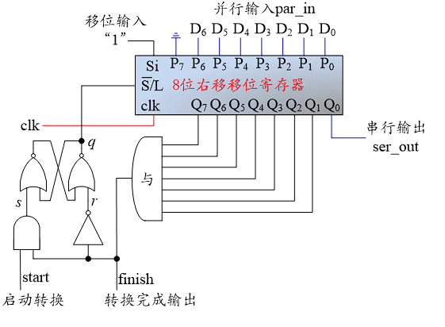

移位寄存器
实验背景
移位寄存器
参考移位寄存器 - 维基百科。
移位寄存器(shift register) 是一种在若干相同时钟脉冲下工作的以触发器级联为基础的器件，每个触发器的输出接在触发器链的下一级触发器的“数据”输入端，使得电路在每个时钟脉冲内依次向左或向右移动一个比特，并在输出端进行输出。
根据输入与输出特点，可有破坏性读出的串入串出、串入并出、并入串出等不同功能的移位寄存器。
串入串出，以 8 位右移移位寄存器为例，每次移位时，数据输入端移入最左边一位触发器的输出中，同时最右边一位触发器的输出移出并丢失。破坏性读出的含义是所有数据在被移位到最右边的位后就会丢失。
串入并出，可以将输入的串行数据以并行格式输出。在串行通信要求的几位数据完成输入后就可以在输出端的各位同时读出并行数据。

并入串出，可以接收外部并行数据，以最高级位触发器输出作为串行输出位，使用一位控制信号来选择并行读入或串行输出。在写 / 移位控制线保持低电平时，将并行输入的数据写入寄存器中；在写 / 移位控制线保持高电平时，进行移位。

本实验要求的右移移位寄存器功能为：能够并行输入与串行输入功能，使用一个控制信号选择并行输入或串入并出。串行 / 并行输入信号 \(\overline{Shift}/Load\) 为低位时进行串入串出，在每个时钟上升沿进行右移同时将串行输入的 shift_in 信号移入最左边的触发器中；串行 / 并行输入信号为高位时进行并行写入，将并行输入端口数据 par_in 写入触发器中。

74LV164A 芯片功能
仅作了解即可，本节内容参考 datasheet。
74LV164A 功能为 8 位串入并出移位寄存器。清零端 CLR 低电平有效，异步重置将触发器的值修改为 0；串入数据端 A, B 均为高位时输入 1，其他输入下表示输入 0。使用的触发器为正边沿触发。

74LS164 芯片功能与 74LV164A 基本相同，使用的技术不同导致电气特性不同，我们不需要关注。
主板 LED 与七段数码管
SWORD 板上 LED 与七段数码管均是由若干个 74LV164A 构成的串转并（串行输入、并行输出）模块控制，可以回想在使用板上 LED 与七段数码管时，我们会约束 s_out, s_clk, s_clr 等信号，这其实就是串转并模块需要的串行通信信号。
以 LED 为例，板上共 16 个 LED，需要 16 位信号进行控制，可以使用两个 74LV164A 组成 16 位右移移位寄存器来控制，在使用时，我们需要对 LED_CLK, LED_DO 等信号进行控制，在 LED_CLK 上升沿会发生移位并将 LED_DO 信号的值传入寄存器最低位。

七段数码管与 LED 构成相似，区别在于，每个七段数码管都由 8 位信号（七段 + 小数点 = 八个信号）控制，板上共 8 个七段数码管，因此需要 8 个 74LV164A 相连形成 64 位串行输入转并行输出。
移位寄存器的实现
关于实现
你可以参照实验背景中的原理图编写代码，可以使用 LabA 中的 FD 模块代码，你可能需要学习 generate for 来简化代码。
更推荐使用行为描述完成功能。对于在移位寄存器的应用中选择“主板 LED 与七段数码管驱动模块”的同学，你可能需要学习 parameter 相关内容，并使用参数设计移位寄存器模块。
参数设计与 generate
这里的内容主要参考了 chipverify 帖子给出的例子。
我们可以使用 generate 块来批量实例化或提供组合电路赋值，简单来说就是用代码写代码，比如在得到一个一位全加器后，希望通过八个一位级联方式得到八位全加器，我们可以用 generate for 得到八个一位全加器的实例，并给出相应连接：
8 位全加器代码
我们经常有拓展位宽的需求，而每次改变位宽都重写代码会增加很多不必要的工作，Verilog 提供了基本的参数使用，我们可以结合参数和 generate 来简化代码，比如实现一个可以任意改变位宽的行波加法器：
全加器代码
在进行实例化时，我们需要给出参数值，否则参数值将等于模块定义时的默认值。指定参数主要有两种方法，即 #() 与 defparam，这里仅用对全加器模块的 testbench 进行简单展示：
实例化方法
除了模块定义中的 parameter，Verilog 还提供了本地可用的参数 localparam，这部分内容请自行学习。
使用 Verilog 代码完成一个 8 位右移移位寄存器，要求接口与功能如下：
module ShiftReg8b(
input clk,
input shiftn_loadp,
input shift_in,
input [7:0] par_in,
output[7:0] Q
);
clk：时钟信号，在时钟上升沿对存储内容进行修改shiftn_loadp：控制信号，在低电平时进行移位操作，在高电平时进行并行数据读入shift_in：移位时移入的数据par_in：八位并行输入数据Q：并行输出数据
完成移位寄存器设计后，书写测试代码进行测试。
移位寄存器的应用
请注意
请从“跑马灯”和“主板 LED 与七段数码管驱动模块”中选择一个来完成，如果选择“主板 LED 与七段数码管驱动模块”则本实验将获得额外加分，加分仅能用到最后一次实验报告中，不会溢出。
跑马灯
设计一个简单的“跑马灯”应用：
SW[1:0]：调用 Lab7 中的CreateNumber模块，为两个 4 位寄存器regA, regB赋值，SW[0]每一次从闭到开（即信号上升沿）时regB自增一，SW[1]每一次从闭到开时regA自增一- Arduino 上七段数码管：使用七段数码管的某两位分别显示
regA, regB的值，请调用 Lab7 中的DisplayNumber模块 SW[2]：连接控制移位寄存器的shiftn_loadp端口。当SW[2]为1时进行并行输入，将{regA, regB}的值赋给移位寄存器；当SW[2]为0时进行串行输入的右移移位SW[3]：连接控制移位寄存器的shift_in_端口，作为串行输入- Arduino 上 LED：共 8 个 LED，依次表示移位寄存器的
Q[7]~Q[0]数据输出 - 关于时钟：请调用
clk_1s模块获得一个 1s 脉冲的时钟，并将其接到移位寄存器的clk端口
请自行书写代码和约束文件，下板后拍摄图片。
主板 LED 与七段数码管驱动模块
在实验背景中提到，SWORD 上 LED 和七段数码管中显示的内容由若干个 74LV164 的串转并的信号控制，如果希望在 LED 或七段数码管显示数据，我们提供 74LV164A 需要的串行信号即可，也就是说我们需要完成并转串的工作。
P2S 模块
并行数据转串行输出模块 (P2S, Parallel to Serial Converter) 的作用是将并行数据（比如 16 位 LED 亮灭的控制信号）转换成串行输出（同时需要管理串行通信的其他相关信号，如 sclk, sclrnP2S 模块定义如下：
module P2S
#(parameter BIT_WIDTH = 8)(
input clk,
input start,
input[BIT_WIDTH-1:0] par_in,
output sclk,
output sclrn,
output sout,
output EN
);
一种可以使用的电路如图（但是有比较严重的问题，实际上板极有可能发生问题

以 7 位 P2S 模块为例，其工作过程简述如下：
- 初始（
start置0） ：此时 S-R 锁存器的set信号一定为 0，根据锁存器当前存储信号q的值分类讨论q=0表示进行串行输入，即每一个时钟周期移位并补1，若干周期后Q[7]~Q[1]均为1，此时finish信号置1，reset信号置0，锁存器状态保持为0q=1表示进行并行输入，此时并行输入 7 位脏值，但由于最高位接地一定为0，finish信号一定为0，reset信号置1，锁存器状态改变q=0，后经过一段时间后锁存器状态为0，finish为1- 初始状态开始一段时间以后，
finish信号一定为1，表示并未进行串行输出，此时模块状态稳定，等待start信号
- 开始传输（外界准备好并行输入的数据后，
start置 1） ：在并行输入的 7 位数据准备好后，start信号进行一次脉冲（0-1-0） ， （因为初始状态下finish置1）在start置1时，S-R 锁存器进行一次 set，q=1，移位寄存器进行了并行输入Q[7:0] = {1'b0, D[6:0]}- 最高位存在一个
0，因此一定有finish=0sclk = finish | ~clk，此时sclk值和clk相反（为什么这里使用~clk而不是clk，你需要在思考题中回答）ser_out每一个时钟周期输出最低位，右移一位，高位补1
- 最高位存在一个
- 传输结束：传输过程中，高位始终补
1，当并行输入的 7 位全部输出后，当前的Q值为8'b1111_1110finish置1，表示串行输出结束sclk置1，不再存在“上升沿”
q=0，且set和reset信号均为0，保持- 等待下一个
start信号，重新传输
因为直接使用逻辑门可能会综合失败，这里提供模仿 SR 锁存器行为的模块：
请你完善以下代码，得到一个任意位宽的 P2S 模块：
补充说明几个电路图中没有提到的信号：
sclk：串行通信所用的“时钟”，在不进行通信时常置1或0，在sclk上升沿提供串行通信的一位信息soutEN：高位有效，用来控制板上 LED 与七段数码管的使能，在重新载入数据时应置0避免闪烁sclrn：我们可以不使用重置信号，常置1无效状态
完成模块后，请设计仿真文件进行仿真。
Congratulations!
完成 P2S 模块及其仿真，模块功能正常且思考题回答正确即可获得本实验 100 分（后一小节为加分项
主板 LED 与七段数码管驱动模块
分别设计 LED 与七段数码管驱动模块（实际上就是对不同位宽 16 位和 64 位 P2S 的封装
LEDP2S
LEDP2S 是对 16 位 P2S 的简单封装，直接在模块中实例化一个参数 DATA_WIDTH 为 16 的 P2S 模块即可。
module LEDP2S(
input clk,
input start,
input[15:0] par_in,
output sclk,
output sclrn,
output sout,
output EN
);
你需要在约束文件中添加下列约束：
# Serial LED
set_property PACKAGE_PIN N26 [get_ports ledclk]
set_property PACKAGE_PIN N24 [get_ports ledclrn]
set_property PACKAGE_PIN M26 [get_ports ledsout]
set_property PACKAGE_PIN P18 [get_ports LEDEN]
set_property IOSTANDARD LVCMOS33 [get_ports ledclk]
set_property IOSTANDARD LVCMOS33 [get_ports ledclrn]
set_property IOSTANDARD LVCMOS33 [get_ports ledsout]
set_property IOSTANDARD LVCMOS33 [get_ports LEDEN]
Sseg_Dev
Sseg_Dev 中需要对传入的 LEs, points, hexs 等信号进行解析，获得一个 64 位数据再将其传入 64 位 P2S 模块中。
module Sseg_Dev(
input clk,
input start,
input [31:0] hexs,
input [7:0] points,
input [7:0] LEs,
output sclk,
output sclrn,
output sout,
output EN
)
请直接使用以下模块获得 64 位数据：
module HexsTo8Seg(
input [31:0] hexs,
input [7:0] points,
input [7:0] LEs,
output [63:0] seg_data
);
HexToSeg HTS0(.hex(hexs[31:28]), .LE(LEs[7]), .point(points[7]), .segment(seg_data[7:0]));
HexToSeg HTS1(.hex(hexs[27:24]), .LE(LEs[6]), .point(points[6]), .segment(seg_data[15:8]));
HexToSeg HTS2(.hex(hexs[23:20]), .LE(LEs[5]), .point(points[5]), .segment(seg_data[23:16]));
HexToSeg HTS3(.hex(hexs[19:16]), .LE(LEs[4]), .point(points[4]), .segment(seg_data[31:24]));
HexToSeg HTS4(.hex(hexs[15:12]), .LE(LEs[3]), .point(points[3]), .segment(seg_data[39:32]));
HexToSeg HTS5(.hex(hexs[11:8]), .LE(LEs[2]), .point(points[2]), .segment(seg_data[47:40]));
HexToSeg HTS6(.hex(hexs[7:4]), .LE(LEs[1]), .point(points[1]), .segment(seg_data[55:48]));
HexToSeg HTS7(.hex(hexs[3:0]), .LE(LEs[0]), .point(points[0]), .segment(seg_data[63:56]));
endmodule
module HexToSeg(
input [3:0] hex,
input LE,
input point,
output [7:0] segment
);
MyMC14495 MSEG(.D3(hex[3]), .D2(hex[2]), .D1(hex[1]), .D0(hex[0]), .LE(LE), .point(point),
.a(a), .b(b), .c(c), .d(d), .e(e), .f(f), .g(g), .p(p));
assign segment = {a, b, c, d, e, f, g, p};
endmodule
应用
请设计一个顶层模块，调用 clkdiv 模块获得分频时钟，调用你完成的 LEDP2S 将 16'hBEEF 数据展示在板上 LED，调用你完成的 Sseg_Dev 将 32'hDEADBEEF 展示在七段数码管上。
请注意，将 clkdiv 分频得到的 divres[20] 接到两个 P2S 封装模块的 start 端口。
思考题
请选择完成“主板 LED 与七段数码管驱动模块”实验的同学回答这一思考题。观察 P2S 模块对信号 sclk 的赋值语句 assign sclk = finish | ~clk;，解释信号 sclk 的含义，尤其需要解释其驱动中 ~clk 这一信号的意义assign sclk = finish | clk; 会有什么问题